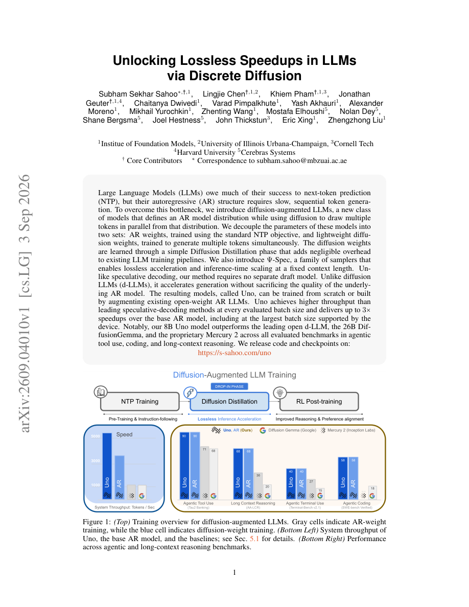

#1
★ 8/10
Unlocking Lossless Speedups in LLMs via Discrete Diffusion
Unlocking Lossless Speedups in LLMs via Discrete Diffusion

图 Figure · Page 1 of paper
🎯 （AI 中文深度分析暂不可用：Anthropic API 额度不足。英文栏为论文原文摘要，下方链接均可正常访问。）
Large Language Models (LLMs) owe much of their success to next-token prediction (NTP), but their autoregressive (AR) structure requires slow, sequential token generation
| 维度 | 中文 | English |
|---|---|---|
| ❓ 待解决 的问题 |
（AI 中文深度分析暂不可用：Anthropic API 额度不足。英文栏为论文原文摘要，下方链接均可正常访问。） | Large Language Models (LLMs) owe much of their success to next-token prediction (NTP), but their autoregressive (AR) structure requires slow, sequential token generation. To overcome this bottleneck, we introduce diffusion-augmented LLMs, a new class of models that defines an AR model distribution while using diffusion to draw multiple tokens in parallel from that distribution. We decouple the parameters of these models into two sets: AR weights, trained using the standard NTP objective, and lightweight diffusion weights, trained to generate multiple tokens simultaneously. The diffusion weights are learned through a simple Diffusion Distillation phase that adds negligible overhead to existing LLM training pipelines. We also introduce $Ψ$-Spec, a family of samplers that enables lossless acceleration and inference-time scaling at a fixed context length. Unlike speculative decoding, our method requires no separate draft model. Unlike diffusion LLMs (d-LLMs), it accelerates generation without sacrificing the quality of the underlying AR model. The resulting models, called Uno, can be trained from scratch or built by augmenting existing open-weight AR LLMs. Uno achieves higher throughput than leading speculative-decoding methods at every evaluated batch size and delivers up to $3\times$ speedups over the base AR model, including at the largest batch size supported by the device. Notably, our 8B Uno model outperforms the leading open d-LLM, the 26B DiffusionGemma, and the proprietary Mercury 2 across all evaluated benchmarks in agentic tool use, coding, and long-context reasoning. We release code and checkpoints at: https://s-sahoo.github.io/uno/ |
| 💡 解决 的亮点 |
（AI 中文深度分析暂不可用：Anthropic API 额度不足。英文栏为论文原文摘要，下方链接均可正常访问。） | See the paper’s original abstract in the "Problem / 背景" row above. |
| 🧪 实验 内容 |
（AI 中文深度分析暂不可用：Anthropic API 额度不足。英文栏为论文原文摘要，下方链接均可正常访问。） | See the paper’s original abstract in the "Problem / 背景" row above. |
| 📊 实验 结果 |
（AI 中文深度分析暂不可用：Anthropic API 额度不足。英文栏为论文原文摘要，下方链接均可正常访问。） | See the paper’s original abstract in the "Problem / 背景" row above. |
| 🏁 结论 | （AI 中文深度分析暂不可用：Anthropic API 额度不足。英文栏为论文原文摘要，下方链接均可正常访问。） | See the paper’s original abstract in the "Problem / 背景" row above. |
| 🔗 论文 链接 |
arXiv: 2609.04010v1 · 📥 PDF | |
⚙️ Method · 方法详解
（AI 中文深度分析暂不可用：Anthropic API 额度不足。英文栏为论文原文摘要，下方链接均可正常访问。）
See the paper’s original abstract in the "Problem / 背景" row above.
🌟 Why It Matters · 为什么重要
（AI 中文深度分析暂不可用：Anthropic API 额度不足。英文栏为论文原文摘要，下方链接均可正常访问。）
See the paper’s original abstract in the "Problem / 背景" row above.